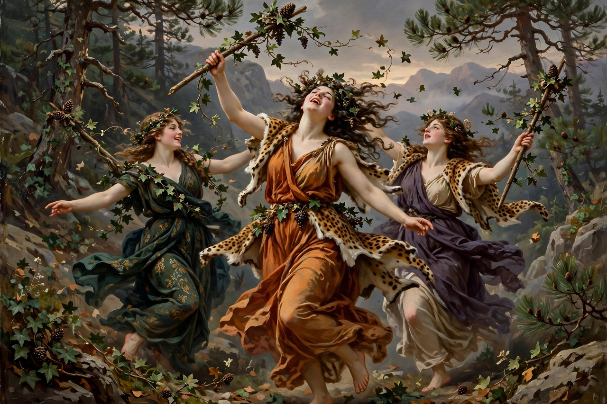

The Bacchae
| Author | Euripides |
|---|---|
| First performed | 405 BC (posthumous), Athens; first prize |
| Genre | Greek tragedy |
| Setting | Thebes |
| Characters | Dionysus, Pentheus, Agave, Cadmus, Tiresias |

The Bacchae (Ancient Greek: Βάκχαι, Bakkhai) is an ancient Greek tragedy written by the Athenian playwright Euripides during his final years in Macedonia, and premiered posthumously at the City Dionysia in 405 BC, where it won first prize as part of a trilogy with Iphigenia in Aulis. It is considered one of the greatest tragedies ever written, and the most harrowing depiction in Greek literature of the god Dionysus.
Plot
Dionysus returns to Thebes, his birthplace, disguised as a mortal priest of his own cult, to punish the house of Cadmus for denying his divinity. He has driven the women of Thebes, including his aunts Agave, Ino, and Autonoe, into ecstatic madness on Mount Cithaeron. King Pentheus, Agave's son, tries to suppress the new cult and arrest its leader, not knowing he is confronting the god himself. Dionysus, apparently yielding, persuades Pentheus to spy on the maenads dressed as a woman. On the mountain the frenzied women discover him; Agave, in her madness believing him a lion, leads the sparagmos — the tearing apart of her own son. She returns to Thebes triumphantly carrying his head, and only slowly, under Cadmus's questioning, comes to recognize what she has done. Dionysus appears in glory, exiles the house, and departs.
Interpretation
The play stages the conflict between reason and ecstasy, order and the irrational, and has been read both as Euripides' late repentance toward religion and as his most savage exposure of it. Dionysus is at once the play's god of theatre and its most terrifying character — the drama itself is his instrument of revenge, giving the work a powerful metatheatrical dimension. Like Oedipus Rex and Antigone, it turns on recognition arriving too late, and on the catharsis of horror and pity.